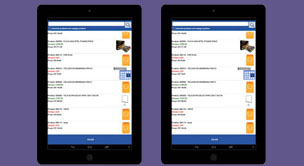
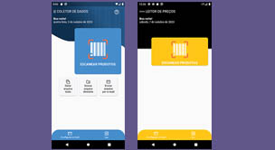
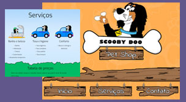

Especialista em Engenharia de Software, graduada em Informática de Gestão, Scrum Master especialista, Six Sigma Yellow Belt. Há quase 20 anos de experiência na área de desenvolvimento de softwares e aplicativos, utilizando diversas ferramentas e frameworks para entregar soluções em sistemas.
Meu lema é foco e disciplina. Minha filosofia é o Kaisen - melhoria contínua.
Sou eterna estudante de TI... eu amo o mundo DEV! ❤
Artista e artesã por amor e por hobby. Pincel e tintas em uma mão, agulha e fios na outra. Escritora amadora e leitora "bookaolich". É preciso equilibrar corpo e mente para que tenhamos mais momentos de qualidade.
Iniciei na carreira de desenvolvimento em 2008, com sistemas de gestão comercial e fiscal, participei ativamente de projetos de implementação de NF-e, CT-e, MDF-e. Trabalhando com análise de requisitos, design, implementação, teste, revisão e manutenção de código.
No mundo "dev" desde 2008. Já tive oportunidade de trabalhar com várias linguagens de programação, frameworks, ferramentas e bancos de dados, conhecer e aprender mais sobre tecnologias, tais como: Delphi (Object Pascal), Java, Android, Flutter - Dart, NestJS, C#, Angular, Python, Oracle, Postgres, Firebird, Sqlite, MySql, SqlServer.
Gosto muito de compartilhar conhecimento e experiências.
Com a chegada do SO Android, a partir da versão 4, comecei a desenvolver aplicativos comerciais e apoio, na emissão de NF-e, pedidos, orçamentos.
Em 2022, mudei um pouco o foco, para assumir o papel de Scrum Master de times de desenvolvimento, assumindo papel de revisão de código, acompanhamento e validação, principalmente dos sistemas de gestão de pedidos e demandas de cargas.
Em 2023, passei a analista de requisitos das equipes.
A partir de 2025, segui com análise e desenvolvimento de sistema aplicado ao armazenamento de grãos para orgãos governamentais, responsável pelo gerenciamento de estoque e faturamento.
Sempre em busca de desafios, fiz capacitação em desenvolvimento web, e continuo aprimorando os conhecimentos para seguir carreira full stack.
Formação
Nível | Formação
Conclusão
Instituição
Profissionalizante - Desenvolvimento software back-end front-end
Andamento
SENAI - SCTec
Capacitativo - Desenvolvimento softwares web
2022
UFSC - Universidade Federal de Santa Catarina
Especialização - Engenharia de Software
2012
UnC - Universidade do Contestado
Graduação - Informática de Gestão
2008
UNIUV - Centro Universitário de União da Vitória
Certificações e Licenças
Internacional Scrum master | Kanban master - SCRUM AS
Alguns projetos realizados em diversas linguagens e IDEs:
Emissão de documentos fiscais
Implementação em ERP comercial desktop, desenvolvido em Delphi, para realizar autorização de documentos fiscais na Receita Federal, sendo NF-e, CT-e, MDF-e.

Aplicativo Gerenciamento de pedidos e orçamentos
Aplicativo de gerenciamento de pedidos e orçamentos, consulta de produtos e gráficos, desenvolvido em Java para SO Android. Emissão, impressão dos documentos em impressora bluetooth. Este é tratado como um módulo do ERP, integrando informações.

Contagem de estoque e Busca de preços
Aplicativos de contagem de estoque e busca de preços desenvolvidos em Flutter e Dart para dispositivos móveis. Ambos com propósito de ler o código de barras do produto, no primeiro o usuário informa o estoque para alimentar o banco de dados, e no segundo, para verificar o preço de venda. Design com Figma.

Website Pet Shop
Projeto desenvolvido para Pet shop, desenvolvido utilizando HTML, CSS e Javascript, contendo a apresentação do estabelecimento, tipos de serviços oferecidos, tabela de valores, contato com localização no mapa, sendo possível agendar os serviços diretamente pelo site ou via whatsapp. O design para aprovação prévia foi desenvolvido em Photoshop.
★ ★ ★ ★ ★
Mais sobre projetos e experiências profissionais, acesse meus espaços: Linkedin e o Github